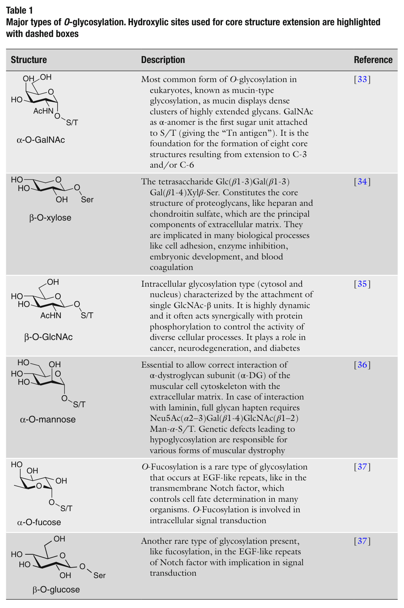
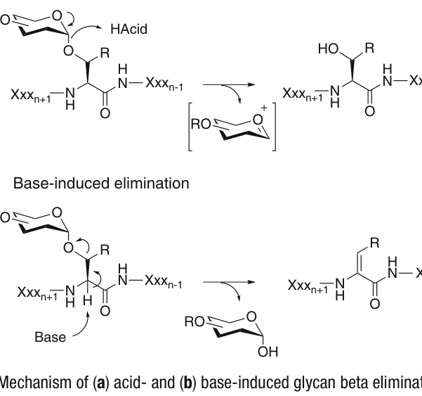
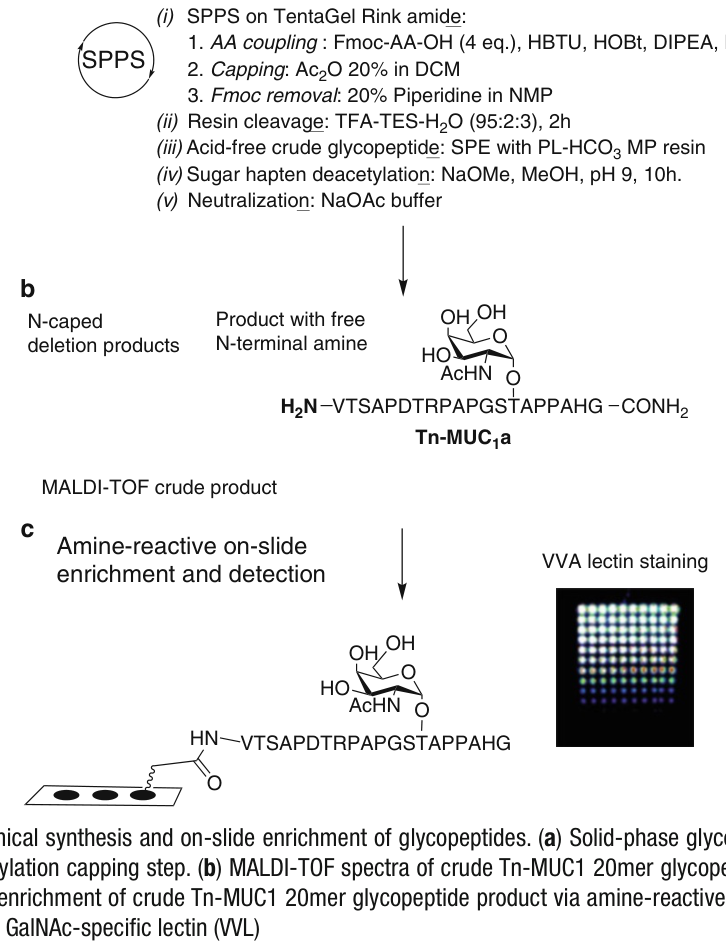

Chapter 14
O-糖肽的合成与糖肽微阵列的构建
Synthesis of O-Glycopeptides and Construction of Glycopeptide Microarrays
原文作者：Ola Blixt & Emiliano Cló
出处：Methods in Molecular Biology, vol. 1047 (2013)
──────────────────────────────
摘要 (Abstract)
蛋白质的O-糖基化(O-glycosylation)是一种重要的翻译后修饰(posttranslational modification)，深刻影响着生物功能与免疫反应。本章提供了高效固相O-糖肽合成(solid-phase O-glycopeptide synthesis, SPGPS)的实验方案，以及用于筛选应用的糖肽微阵列(glycopeptide microarray)芯片构建方案。以黏蛋白型(mucin-type)糖肽为例，展示了糖肽微阵列的构建方法。这些方案特别适合小规模(micromole级)的机器人平行合成(parallel robotic synthesis)。合成过程中对缺失肽(deletion peptides)的N-端胺基进行帽化(capping)是本策略的关键步骤——它使得全长目标产物能够直接在芯片上进行富集(enrichment)，从而省去了繁琐的分离与纯化步骤。
📌 摘要要点
O-糖基化是蛋白质最重要的翻译后修饰之一
本章提供固相O-糖肽合成(SPGPS)和糖肽微阵列构建的完整方案
N-端帽化(capping)策略是实现芯片上直接富集的关键创新
方案适合小规模平行合成，与自动化机器人兼容
1. 引言 (Introduction)
蛋白质的O-糖基化是自然界中最复杂的翻译后修饰之一[1]。蛋白质糖基化的两种主要形式为N-糖基化(N-glycosylation)和O-糖基化(O-glycosylation)。从生物合成的角度来看，两者之间存在若干根本性差异。
N-糖基化的生物合成是通过将一个预先组装好的、结构固定的寡糖前体(oligosaccharide precursor)转移到新生蛋白质(asparagine)上的识别基序(N-X-S/T)中。而O-糖基化则发生在丝氨酸(serine)和苏氨酸(threonine)的羟基上，其变异性远大于N-糖基化，原因在于：(a) 启动糖基化事件的单糖种类非常多样，包括2-N-乙酰葡糖胺(2-N-acetylglucosamine, GlcNAc)、甘露糖(mannose, Man)、岩藻糖(fucose, Fuc)和2-N-乙酰半乳糖胺(2-N-acetylgalactosamine, GalNAc)[2,3]；(b) 底层蛋白质骨架上没有明确的共有序列(consensus sequence)来指导糖基化位点。表1列出了六种主要的O-糖基化类型。

表1 主要O-糖基化类型。用于核心结构延伸的羟基位点以虚线框标出。(Reference [33-37])
六种主要O-糖基化类型详解
① α-O-GalNAc（黏蛋白型糖基化 / Mucin-type glycosylation）：这是真核生物中最常见的O-糖基化形式。GalNAc以α-异头体(anomer)的形式连接到Ser/Thr上，形成所谓的"Tn antigen（Tn抗原）"。黏蛋白(mucin)展示出密集簇集的高度延伸的糖链。Tn抗原是八种核心结构(core structures)形成的基础，这些核心结构由C-3和/或C-6位的延伸反应产生[33]。 ② β-O-木糖（β-O-xylose）：四糖Glc(β1-3)Gal(β1-3)Gal(β1-4)Xylβ-Ser构成了蛋白聚糖(proteoglycans)的核心结构，如硫酸乙酰肝素(heparan sulfate)和硫酸软骨素(chondroitin sulfate)，它们是细胞外基质(extracellular matrix)的主要成分。与细胞黏附、酶抑制、胚胎发育和血液凝固等生物学过程密切相关[34]。 ③ β-O-GlcNAc（胞内糖基化）：一种胞内(细胞质和细胞核)糖基化类型，特征是附着单个GlcNAc-β单元。它具有高度动态性，通常与蛋白质磷酸化(protein phosphorylation)协同作用，控制多种细胞过程。在癌症、神经退行性疾病和糖尿病中发挥作用[35]。 ④ α-O-甘露糖（α-O-mannose）：对肌营养不良蛋白聚糖α亚基(α-dystroglycan subunit, α-DG)与细胞外基质的正确相互作用至关重要。与层粘连蛋白(laminin)相互作用时，完整的糖链半抗原(hapten)需要Neu5Ac(α2-3)Gal(β1-4)GlcNAc(β1-2)Man-α-S/T结构。导致低糖基化(hypoglycosylation)的遗传缺陷是多种肌营养不良症(muscular dystrophy)的致病原因[36]。 ⑤ α-O-岩藻糖（α-O-fucose）：一种罕见型糖基化，发生在EGF样重复序列(EGF-like repeats)上，如在控制多种生物体细胞命运决定的跨膜Notch因子中。O-岩藻糖基化参与细胞内信号转导[37]。 ⑥ β-O-葡萄糖（β-O-glucose）：另一种罕见的糖基化类型，与岩藻糖基化类似，存在于Notch因子的EGF样重复序列中，参与信号转导[37]。
1.1 黏蛋白型O-糖基化与合成挑战
O-GalNAc黏蛋白型糖基化是最常见的O-糖基化类型之一。其生物合成由20种独特的ppGalNAc转移酶(ppGalNAc transferases)启动，这些酶具有不同的特异性但也存在部分冗余(redundancy)[4]。过去十年中，在制备多样化糖库(glycan libraries)并将其展示在各种高通量筛选平台(如微阵列芯片)上的重大合成努力，极大地推动了蛋白质与复杂碳水化合物之间相互作用的研究[5,6]。包括凝集素(lectin)、抗体、病毒、细胞和酶在内的结合相互作用已被研究，并提升了糖组学(glycomics)的影响力[7]。
然而，越来越多的证据表明，当糖链与其底层肽/蛋白质结构紧密相邻地展示时——例如通过Ser或Thr连接的O-糖链——会对其相互作用产生深远影响。例如，许多针对STn、T和Tn O-糖链的抗碳水化合物肿瘤抗体(anti-carbohydrate tumor antibodies)确实需要适当的底层肽骨架展示才能实现最佳结合[8]。此外，异常的O-糖基化可打破免疫耐受(immune tolerance)，引发糖肽特异性抗体(glycopeptide-specific antibodies)[9,10]。这种免疫反应支撑了血清诊断(serodiagnostics)[11-13]和疫苗(vaccines)[14]的开发努力。
1.2 化学合成 vs. 酶法合成
合成O-糖肽有两种不同的方法：(1) 酶法合成和(2) 化学合成。利用重组GalNAcT进行肽的酶法糖基化在技术上是可行的，但通常面临反应不完全和位点特异性附着不确定的问题，从而产生不均一的产物。相比之下，通过固相肽合成(solid-phase peptide synthesis, SPPS)制备O-糖肽能够对糖基化位点进行化学控制，并保证结构均一性(structural homogeneity)。这依赖于预形成的O-糖基化且适当保护的氨基酸(preformed O-glycosylated and suitably protected amino acids)。N-糖基化氨基酸也可以类似方式引入。
1.3 Fmoc vs. Boc 策略的选择
Fmoc方法学比Boc方法学更适合完成糖肽合成。这是因为Boc策略需要在每个延伸步骤后将生长中的肽链暴露于强酸（以去除N-端的Boc基团），以及最终使用HF从树脂上切割。这些条件最终会损害酸敏感的糖苷键(glycosidic linkage)的完整性，并发生酸诱导的β-消除(beta elimination)（图1a）。而Fmoc-SPPS更适合O-糖肽制备，因为酸暴露仅发生在用TFA混合液从树脂上释放肽的步骤中。然而，仍需仔细选择反应方案，因为该方法学中许多常用试剂仍与不稳定的糖苷键不兼容[15]。

图1 (a) 酸诱导和 (b) 碱诱导的糖链β-消除机制。两种途径都会导致糖链从肽链上脱落。
1.4 糖链保护基策略
主要的挑战在于为糖链选择保护基策略，使其不仅能经受SPPS全过程，还能被轻松去除而不对目标结构造成有害影响。在这方面，选择相当有限。对糖链羟基进行乙酰化(acetylation)保护是目前最广泛使用的方法；苯甲酰化(benzoylation)也有报道，但使用较少，因为其去除需要更强力的条件。
乙酰基可通过以下方式去除：甲醇中的稀甲醇钠(sodium methoxide, NaOMe/MeOH)、水合肼(hydrazine hydrate)[16]或甲醇中的饱和氨(saturated ammonia in methanol)[17]，其中第一种最为普遍。然而，此操作并非没有风险——如果pH未得到严格控制并保持在11以下，碱催化的β-消除可能导致糖链半抗原的大量脱落（图1b）。重要的是，哌啶(piperidine)和吗啉(morpholine)——Fmoc去除中常用的受阻碱——既不影响乙酰基也不会引发β-消除[18,19]。此外，乙酰基凭借其吸电子效应(withdrawing effect)，能够增强糖苷键对酸催化消除的稳定性[20]。
需要注意，乙酰去除所需的碱性条件可能对半胱氨酸(cysteine)[21]和天冬酰胺(asparagine)[22]侧链产生不利影响。另一个更普遍的问题是在糖基化氨基酸偶联过程中，当反应缓慢时，存在酰基迁移(acyl migration)的风险——从糖迁移到生长肽链的N-端，从而导致永久性帽化并使合成停滞[23]。
1.5 连接基团(Linkers)与偶联试剂
基于Fmoc的固相糖肽合成与肽合成中广泛使用的标准连接基团(linkers/handles)兼容，例如Rink amide、Wang、SASRIN（温和酸切割）、2-氯三苯甲基氯(2-chlorotrityl chloride，保护肽酸)和Sieber（保护肽酰胺）。对于组合"一珠一化合物"(one-bead one-compound)研究，安全帽酰胺连接基(safety-catch amide linker, SCAL，在砜还原前对酸和碱均稳定)[24]和光可切割连接基4-[4-(1-氨基乙基)-2-甲氧基-5-硝基苯氧基]丁酸[25]均已成功应用。这些连接基团适合在珠上展示完全脱保护的糖肽，同时在珠测定后允许无损回收。
关于偶联条件，Fmoc-SPPS中最常见的偶联试剂和活化剂组合与糖肽合成兼容。常用的包括DIC/HOBt、HBTU/HOBt和HATU/HOAt。
1.6 糖基化构建模块的来源
通过Fmoc-SPPS合成复杂O-糖肽的主要限制在于糖基化构建模块(glycosylated building blocks)的可得性。携带短糖链半抗原(short glycan haptens)的Ser和Thr构建模块——如GalNAcα（Tn antigen）以及二糖和三糖如Galβ(1-3)GalNAcα（T antigen）和Neu5Acα(2-3)Galβ(1-3)GalNAcα（ST antigen）——已有商品化供应。然而，更复杂的寡糖难以获得，需要定制合成[26]。为简化这些困难，利用可溶性重组表达糖基转移酶(glycosyltransferases)进行酶促寡糖延伸已被证明是一种有价值的替代方案[27,28]。
1.7 糖肽微阵列平台的开发
在我们的实验室中，我们优化了O-糖肽的合成方法，专门用于生产O-糖肽微阵列，以大幅简化每个合成目标的纯化要求。肽微阵列(peptide microarrays)[29]在过去十年中已发展成为高通量筛选众多生物事件的强大工具。我们[30]和其他课题组[31]已经证明，微阵列格式可用于展示多达数百种不同的合成O-糖肽，以共价方式锚定，用于血清组学分析(seromic profiling)。
此处，我们首先提供基于我们最新发展的高通量生产不同O-糖肽结构的详细方案，利用糖基化氨基酸构建模块。该方案结合了2 μmol规模的平行和自动化Fmoc固相糖肽合成[30]。这需要在每个偶联循环后对未反应的N-端胺进行帽化(capping)，使得最终只有全长目标结构保留游离的N-端胺基。接下来，糖肽直接用于糖肽微阵列的构建。只有全长糖肽具有N-端胺基这一事实使得芯片上纯化技术成为可能——这些胺功能化糖肽可以通过胺反应性玻璃载片(NHS-ester present throughout the surface)共价捕获（图2）。
我们所使用的载片支持物，凭借其水凝胶(hydrogel)表面，已被证明特别适合血清筛选，在非特征区域给出极低的非特异性结合和背景信号[6]。此外，糖链半抗原的酶促延伸也能很好地兼容，从而获得多层筛选平台(multilayered screening platform)[32]。

图2 糖肽的化学合成与芯片上富集。(a) 带有N-乙酰化帽化步骤的固相糖肽合成。(b) 粗产物Tn-MUC1 20mer糖肽的MALDI-TOF质谱图。(c) 通过胺反应性玻璃表面进行粗产物糖肽的芯片上微阵列富集，以及GalNAc特异性凝集素(VVL)的检测。
📌 第1节 引言 要点总结
O-糖基化是最复杂的翻译后修饰之一，主要有六种类型
黏蛋白型(α-O-GalNAc)是最常见的O-糖基化形式，Tn抗原是其基础结构
Fmoc-SPPS优于Boc-SPPS，因Boc策略中的强酸会破坏糖苷键并导致β-消除
乙酰基是最常用的糖链保护基，可用NaOMe/MeOH去除，但需严格控制pH<11以防β-消除
N-端帽化策略使得全长产物可在芯片上直接富集，避免了繁琐纯化
酶法合成虽可行但产物不均一，化学合成(SPPS)可精确控制糖基化位点
2. 材料 (Materials)
本节列出了O-糖肽合成和微阵列构建所需的全部材料，包括树脂、氨基酸、试剂、溶剂和设备。
2.1 固相合成树脂与氨基酸
1. TentaGel S with Fmoc-Rink amide linker，loading 0.23 mmol/g（Rapp Polymere GmbH, Tübingen, Germany）。 2. Nα-Fmoc氨基酸(Fmoc-AA-OH)，含以下侧链保护基：tert-butyl (OtBu，用于Glu, Asp, Ser, Thr, Tyr)、2,2,4,6,7-pentamethyldihydrobenzofuran-5-sulfonyl (Pbf，用于Arg)、trityl (Trt，用于Asn, Gln, His)和tert-butyloxycarbonyl (Boc，用于Lys)。可从多家来源购买（如Novabiochem; Advanced ChemTech; Bachem Bioscience; Iris Biotech）。 3. Fmoc保护的糖基化氨基酸：Fmoc-Tn (GalNAcα)-Ser/Thr、Core1 (T antigen, Galβ1-3GalNAcα)-Ser/Thr、Core3 (GlcNAcβ1-3GalNAcα)-Thr和Core4 (GlcNAcβ1-3[GlcNAcβ1-6]GalNAcα)-Thr购自Sussex Research (OT, Canada)。
2.2 偶联试剂与辅助亲核试剂
4. 偶联试剂：HBTU (N-[(1H-benzotriazol-1-yl)(dimethylamino)methylene]-N-methylmethanaminium hexafluorophosphate N-oxide)。 5. 辅助亲核试剂(auxiliary nucleophiles)：HOBt (1-hydroxybenzotriazole)和HOAt (N-hydroxybenzotriazole)。
2.3 试剂与溶剂
6. 帽化试剂(capping reagent)：乙酸酐(acetic anhydride, Ac₂O)。 7. 溶剂：NMP (N-methyl-2-pyrrolidone)、DMF (N,N-dimethylformamide)、DCM (dichloromethane)、乙醚(diethyl ether, Et₂O)、甲醇(methanol, MeOH)。 8. 碱：哌啶(piperidine)、DIEA (N,N-diisopropylethylamine)、MeONa 0.5 M（0.5 M甲醇钠甲醇溶液）。 9. 酸：三氟乙酸(trifluoroacetic acid, TFA)、乙酸(acetic acid, HOAc)。 10. 清除剂(scavengers)：三乙基硅烷(triethylsilane, TES)、去离子水。
2.4 设备与耗材
11. 塑料注射器(2 mL)，配有聚丙烯滤板(polypropylene filter frit)和聚四氟乙烯旋塞(Teflon tap)。 12. Syro II全自动肽合成仪(MultiSynTech GmbH, Germany; 现属Biotage AB, Sweden)。 13. 多注射器抽吸块(multi-syringe suction block)。 14. PL-HCO₃ (hydrogen carbonate) MP SPE树脂(Agilent Technologies, #PL3540)。 15. 96孔滤板(1 mL deep) (Pall, #5054, Ann Arbor, MI, USA)。 16. 真空歧管(vacuum manifold) (Pall, #5017)。 17. 96孔聚丙烯圆底微孔板(2 mL deep) (Ritter, #43001-0020)。 18. Schott NEXTERION® Slide H (Schott AG, #1070936, Jena, Germany)。 19. SpeedVac浓缩仪(Thermo Fisher Scientific #SPD131DDA-230)，配超低温冰箱和无缝Teflon真空泵。 20. 冷冻干燥仪(lyophilizer)。 21. MicroGrid II自动化微阵列点样仪(Digilab, Holliston, MA)。 22. 点样缓冲液(print buffer, PB)：含150 mM磷酸盐、0.005% CHAPS、0.03% NaN₃，pH 8.5。 23. 封闭缓冲液(blocking buffer, BB)：含50 mM乙醇胺的50 mM硼酸盐缓冲液，pH 9.2。 24. 384孔源板(BD Falcon Microtest™ 384-well 30 μL assay plates)。
📌 第2节 材料 要点总结
固相载体：TentaGel S RAM (Rink amide)，loading 0.23 mmol/g
糖基化氨基酸从Sussex Research购买，包括Tn、T、Core3、Core4等类型
偶联体系：HBTU/HOBt/HOAt + DIPEA
N-端帽化用Ac₂O/DCM，Fmoc脱保护用piperidine/NMP
微阵列使用Schott NEXTERION Slide H（NHS酯反应性水凝胶表面）
3. 方法 (Methods)
3.1 总体考虑 (General Considerations)
以下描述的O-糖肽合成方案已在我们的实验室中进行了优化，以满足共价微阵列平台的要求。在此方面，关键特征包括：
(1) 小规模合成——每个肽仅使用几毫克树脂——以通过平行机器人自动化(parallel robotic automation)实现更高的通量；
(2) 在每个偶联步骤后用乙酸酐对未反应的N-端胺进行帽化(capping)。这防止了缺失肽(deletion peptides)的形成，并允许直接在芯片上富集全长目标产物。
该方案还涉及将Fmoc-氨基酸-HOBt/HOAt溶液与树脂直接混合，然后加入偶联试剂和碱，从而避免了预活化(pre-activation)。这一特点有助于方案向机器人合成仪的顺利转移。
工作溶液的预先配制
在开始合成工作之前，需预先配制以下工作溶液：
(a) Fmoc-AA-OH溶液：4.0当量(equiv.)、0.5 M，溶于辅助亲核试剂HOBt:HOAt (9:1 mol/mol, 4.0 equiv., 0.5 M)的DMF溶液中（见Notes 1和2）。 (b) HBTU溶液：3.8 equiv., 0.48 M，溶于DMF。 (c) DIPEA溶液：2 M，溶于NMP，用于肽链延伸过程中的碱。 以及用于Fmoc去除的哌啶溶液(piperidine, 2:3 v/v in NMP)和用于帽化失败序列的乙酸酐溶液(Ac₂O, 1:4 in DMF，另含1% v/v DIPEA和少量HOBt晶体)。 所有这些溶液在室温下可稳定数天。
合成方案针对2 μmol规模的糖肽制备进行了优化。使用的标准固相载体为TentaGel S RAM (0.24 mmol/g)。该树脂配有Rink amide连接臂，可在TFA切割液中连同侧链保护基一起切割，生成C-端酰胺(C-terminal amides)。该连接臂受Fmoc保护；因此在偶联第一个氨基酸之前需要先去除Fmoc。使用配有滤板的聚丙烯注射器筒(2 mL)作为反应器。
每个延伸循环的标准方案包括三个步骤：N-端胺的Fmoc去除、Fmoc-AA-OH与生长肽链的偶联、以及未反应结构的帽化。
📌 第3.1节 要点总结
方案专为共价微阵列平台优化：小规模(2 μmol)、平行自动化
关键创新：每步偶联后进行N-端帽化，使全长产物可芯片上富集
避免预活化，直接混合试剂——利于机器人转移
工作溶液可室温稳定数天，便于批量制备
3.2 基于Fmoc的固相O-糖肽合成 (Fmoc-Based Solid-Phase O-Glycopeptide Synthesis)
步骤1：Fmoc去除
向树脂中加入100 μL哌啶/NMP溶液(2:3 v/v)，在振荡下孵育15分钟。排干液体，用NMP洗涤(3×1 min, 每次1 mL)。再加入50 μL NMP和50 μL哌啶/NMP溶液(1:4 v/v)，在振荡下孵育15分钟。排干液体，用NMP洗涤(3×1 min, 每次1 mL)。
步骤2：肽链延伸(偶联)
向树脂中加入4.0 equiv. Fmoc-AA-OH/HOBt:HOAt溶液，然后加入3.8 equiv. HBTU溶液，最后加入8.0 equiv. DIEA 2M溶液。轻轻搅拌120分钟，然后排干偶联溶液并用NMP洗涤树脂(4×1 min, 每次1 mL)（见Note 3）。
步骤3：帽化未反应结构
向树脂中加入100 μL乙酸酐帽化溶液，轻轻涡旋振荡10分钟。排干液体并洗涤(3×1 min)。帽化操作共重复三次。最后洗涤树脂5×2 min, 每次1.5 mL。
合成在最后一个氨基酸的Fmoc去除后结束，以保留N-端游离胺基，便于后续与微阵列载片上的NHS酯偶联。用NMP洗涤树脂5×1 min, 每次1.0 mL，然后进行O-糖肽切割。或者，如果树脂已预先真空干燥数小时，可以在-18°C下长期保存。
建议仅在加入O-糖基氨基酸后，或操作者认为某次偶联特别困难时，才进行Kaiser试验（茚三酮试验，见Chapter 2）。
📌 第3.2节 要点总结
每轮延伸循环：Fmoc去除→氨基酸偶联(120 min)→帽化(重复3次)
偶联条件：4 equiv Fmoc-AA-OH, 3.8 equiv HBTU, 8 equiv DIPEA
两次Fmoc去除：先2:3 piperidine/NMP 15 min，再1:4 piperidine/NMP 15 min
合成结束时不去除最后氨基酸的Fmoc，保留N-端游离胺用于芯片共价固定
Kaiser试验仅在糖氨基酸偶联后或困难偶联时使用
3.3 O-糖肽从固相载体上的切割 (O-Glycopeptide Cleavage from Solid Support)
1. 新鲜配制切割混合液：TFA:TES:水 = 94:3:3 (v/v)。在锥形瓶中定期摇旋，确保TES微滴在混合液中保持微分散状态（见Note 4）。 2. 小心地向每个肽树脂加入约1 mL切割混合液；用活塞密封注射器筒，轻柔振摇120分钟。 3. 通过抽吸将液相收集到螺口管中，用300 μL新鲜TFA洗涤珠子，与第一次TFA滤液一起收集。 4. 用SpeedVac离心机将TFA液相体积减少至1-200 μL（见Note 5）。 5. 向切割混合液残渣中加入约1 mL冷乙醚(Et₂O)，剧烈涡旋。白色无定形粗糖肽沉淀物将出现。 6. 在4°C冷却的高速离心机中以3,000×g或更高转速离心5分钟，弃去乙醚（可轻松倾倒去除）。 7. 重复步骤5和6两次。 8. 在通风橱中让残余乙醚从沉淀中蒸发2-4小时。 9. 将沉淀溶解于500 μL 2M醋酸水溶液中，冷冻干燥。
📌 第3.3节 要点总结
切割液：TFA:TES:H₂O = 94:3:3，反应2小时
切割后用冷乙醚沉淀糖肽，离心收集
乙醚洗涤共3次去除杂质
最终溶于2M醋酸水溶液冷冻干燥
3.4 不含羧酸侧链的糖肽——糖链半抗原脱保护
(Deprotection of Glycan Hapten for O-Glycopeptide Sequences Devoid of Carboxylic Acid Side Chains)
去除糖肽中糖链部分羟基上的乙酰酯(acetyl esters)是在Zemplén条件下进行的，使用稀MeONa/MeOH溶液。在此阶段仔细控制pH至关重要。主要风险在于：如果pH过高(>12)，糖链半抗原将发生β-消除，从而毁掉整个合成工作。另一方面，如果pH过低(<8.5)，脱乙酰化将变得非常缓慢，即使延长孵育时间也无法完成。
当糖肽不含羧酸侧链(Glu或Asp)时，我们发现使用碳酸氢盐珠(PL-HCO₃ MP SPE, Agilent)很方便，可以获得游离碱(free-base)形式的糖肽。该珠子中和过量的酸盐（来自醋酸或TFA），并通过固体支持物上的季铵(quaternary amine)进行离子配对（见Note 6）。这使得在糖链脱保护过程中的pH控制更加简便。
以下是针对96个糖肽一批同时处理的优化方案：
1. 将约1.5 g干燥的PL-HCO₃树脂均匀分配到96孔滤板中。 2. 将滤板放置在配有接收96孔板(2 mL deep)的真空歧管上。 3. 将糖肽溶解在MeOH-水溶液(1:1, 400 μL)中，必要时利用超声辅助溶解。 4. 将糖肽溶液分配到滤板孔中，孵育5分钟。 5. 对歧管施加真空以排干滤板，将滤液收集到接收板中。 6. 用200 μL水和200 μL MeOH依次洗涤珠子，在两次添加之间施加真空，将滤液与第一次滤液一起收集。 7. 用SpeedVac去除MeOH，通过冷冻干燥回收游离碱形式的糖肽。 8. 将糖肽溶解在400 μL干燥MeOH中，加入200 μL 0.015 M MeONa/MeOH溶液，使pH约为9-10（根据预湿pH试纸判断），在室温下轻柔振摇孵育（见Note 7）。 9. 反应完成后，加入100 μL 0.1 M醋酸水溶液淬灭过量碱。此时pH通常在6-7之间。 10. 冷冻干燥糖肽溶液，回收完全脱保护的粗糖肽为蓬松固体。
📌 第3.4节 要点总结
Zemplén条件：0.015 M MeONa/MeOH，pH 9-10，室温
pH控制至关重要：>12导致β-消除，<8.5则反应不完全
不含Glu/Asp的糖肽可用PL-HCO₃碳酸氢盐树脂预处理获得游离碱形式
适合96个样品批量处理
反应通常4小时完成（≤2个糖单元），更复杂糖链可能需要过夜
3.5 含羧酸侧链的糖肽——糖链半抗原脱保护
(Deprotection of Glycan Hapten for O-Glycopeptide Sequences with Carboxylic Acid Side Chains)
当存在酸性氨基酸侧链（如Glu、Asp）时，建议避免使用碳酸氢盐珠，因为糖肽会通过离子配对被珠子上的季铵吸附，导致材料损失（见Note 8）。因此，脱乙酰化将直接在从树脂切割后得到的冷冻干燥糖肽产物上进行(Subheading 3.3)。这种方法的主要缺点是，与糖肽共存的醋酸盐以及酸性侧链会产生"缓冲效应(buffer effect)"，使得调节正确的pH进行高效脱乙酰化更加费力。没有一种固定的MeONa浓度可以适用于所有结构；因此，每种结构的pH都必须单独调节，这阻碍了处理通量。
1. 将Subheading 3.3得到的冷冻干燥糖肽溶解在400 μL干燥MeOH中（螺口管）。 2. 小心地向每种糖肽溶液中滴加0.015 M MeONa，直到pH达到约9-10（根据预湿pH试纸为每种结构判断），密封管口。 3. 在室温下轻柔振摇孵育。 4. 至少每小时一次用预湿pH试纸检查pH，每当pH降至9以下时用新鲜0.015 M MeONa溶液调节。 5. 定期通过质谱(MS)监测反应进程。 6. 反应完成后，加入100 μL 0.1 M醋酸水溶液淬灭过量碱性。此时pH通常在6-7之间。 7. 冷冻干燥糖肽溶液，回收完全脱保护的粗糖肽为蓬松固体。
📌 第3.5节 要点总结
含Glu/Asp侧链时不能用PL-HCO₃树脂（会吸附损失）
直接用MeONa/MeOH处理，但需逐个调节pH
酸性侧链产生"缓冲效应"，使pH调节更困难
需每小时检查pH并用质谱监测反应进程
通量受限——每种结构需单独优化
3.6 共价O-糖肽微阵列的构建 (Covalent O-Glycopeptide Microarray Fabrication)
我们研究组制备的O-糖肽主要用于共价O-糖肽微阵列的制作。如前所述，由于每个延伸步骤后都进行系统性帽化，糖肽可以作为粗混合物直接点样，因为全长序列是混合物中唯一保留游离N-端胺基的物种——只有它能与载片表面的NHS酯反应而被共价捕获。
糖肽微阵列制作流程如下：
1. 将糖链脱乙酰化步骤(Subheading 3.6)得到的冷冻干燥糖肽溶解在200 μL含0.03% NaN₃（防腐剂）的水中。此为糖肽储备液(stock solution)。 2. 将糖肽储备液按1:5稀释到点样缓冲液(print buffer, PB)中，制成点样溶液(printing solution)。 3. 根据微阵列设计所需的图案，将每针20 μL点样溶液分配到384孔板(30 μL/孔)中（见Note 9）。 4. 将所需数量的解冻Nexterion Slide H载片装入微阵列点样仪，执行点样（关于设置和执行点样，请参阅点样仪操作手册）。 5. 点样完成后，取出载片，在70%相对湿度下孵育1小时（见Note 10）。 6. 将载片浸入封闭缓冲液(blocking buffer, BB)中，室温封闭1小时，以封闭未点样区域。 7. 用水洗涤载片，离心干燥。载片现已准备好进行染色。
📌 第3.6节 要点总结
粗产物可直接点样——N-端帽化策略确保只有全长产物被共价固定
点样溶液：糖肽储备液1:5稀释到print buffer (150 mM phosphate, pH 8.5)
使用Schott NEXTERION Slide H（NHS酯水凝胶表面）
点样后70%湿度孵育1小时→封闭缓冲液封闭1小时→水洗离心
封闭后载片可在-20°C保存数月
4. 注意事项 (Notes)
Note 1: Fmoc-AA-OH溶液的配制
通常，所有不同的Fmoc-AA-OH溶液在合成前预先配制。实际操作中，最好的方法是先配制0.5 M的HOBt和HOAt (9:1 mol/mol) DMF溶液。然后将每种Fmoc-AA-OH放入50 mL Falcon管中，用上述溶液溶解，使氨基酸浓度也为0.5 M。多数氨基酸最初会给出浑浊溶液，超声几分钟后变为均相。
Note 2: 特殊溶解要求
对于Fmoc-Phe-OH，出于溶解性原因，用NMP代替DMF。对于Fmoc-Arg(Pbf)-OH，通过省略HOBt并使用0.5 M HOAt代替，可获得改善的偶联效率。
Note 3: 糖基化氨基酸的双偶联
当引入更昂贵和体积更大的糖基化氨基酸时，进行双偶联(double coupling)是方便的。对偶联效率和材料经济性都有利的方法是进行两次连续偶联，每次90分钟，每次使用约1.5 equiv.糖基化氨基酸、1.5 equiv. HOBt:HOAt (9:1)、1.4 equiv. HBTU（DMF中）和3 equiv. DIPEA（NMP中）。
Note 4: TFA切割液的安全
TFA-清除剂切割混合液具有强腐蚀性。所有与肽切割有关的操作必须在通风橱内进行。
Note 5: TFA的替代去除
或者，可以在氮气流下去除TFA。该操作需在通风橱内进行。
Note 6: 省略冷冻干燥
可以直接从沉淀开始游离糖肽碱，跳过从2M醋酸冷冻干燥糖肽的步骤(Subheading 3.3, step 8)。
Note 7: 脱乙酰化的时间控制
当糖肽中不超过两个糖单元时，脱乙酰化进行迅速，通常在4小时内完成。当存在更多糖单元时，通常需要过夜孵育并用新鲜0.015 M MeONa溶液调节pH。建议定期通过MS监测反应进程。
Note 8: 离子配对导致的吸附
被吸附的材料量将以序列特异性方式变化（通常存在的酸性侧链越多，在珠子上的离子配对越有效），并且取决于所用珠子的量。
Note 9: 微阵列设计
微阵列设计因待点样的不同糖肽数量而异。我们实验室中最常见的载片设计允许每张载片点印16或48个相同子阵列。在16子阵列设计中(2列8行)，点间距(pitch)为0.21 mm，每个子阵列最多容纳28×28个点。在48子阵列设计中(4列12行)，点间距为0.19 mm，每个子阵列最多容纳12×12个点。使用的针数可变，不与特定载片设计绑定。
Note 10: 载片存储
加湿后，载片可在-20°C下保存数月。需要时，可将点印好的载片从冷冻室取出，立即暴露于封闭缓冲液中。
致谢 (Acknowledgements)
本工作得到了以下机构的支持：The Benzon Foundation、The Danish Agency for Science, Technology and Innovation (FTP)、EU FP7/2007-2013-EuroGlycoArrays 215536、EU FP7-GlycoBioM、以及哥本哈根大学卓越研究项目(University of Copenhagen Programme of Excellence)。
参考文献 (References)
[1] Varki A (2009) Essentials of Glycobiology, 2nd edn. Cold Spring Harbor Laboratory Press, New York
[2] Haltiwanger RS, Lowe JB (2004) Role of glycosylation in development. Annu Rev Biochem 73:491-537
[3] Paulson JC, Blixt O, Collins BE (2006) Sweet spots in functional glycomics. Nat Chem Biol 2:238-248
[4] Bennett EP, Mandel U, Clausen H et al (2011) Control of mucin-type O-glycosylation—a classification of the polypeptide GalNAc-transferase gene family. Glycobiology 22:736-756
[5] Alvarez RA, Blixt O (2006) Identification of ligand specificities for glycan-binding proteins using glycan arrays. Methods Enzymol 415:292-310
[6] Blixt O, Head S, Mondala T et al (2004) Printed covalent glycan array for ligand profiling of diverse glycan binding proteins. Proc Natl Acad Sci U S A 101:17033-17038
[7] Paulson JC, Blixt O, Collins BE (2006) Sweet spots in functional glycomics. Nat Chem Biol 2:238-248
[8] Blixt O, Boos I, Mandel U (2012) In: Kosma P (ed) Anticarbohydrate antibodies. New York, Springer
[9] Tarp MA, Sorensen AL, Mandel U et al (2007) Identification of a novel cancer-specific immunodominant glycopeptide epitope in the MUC1 tandem repeat. Glycobiology 17:197-209
[10] Ju T, Otto VI, Cummings RD (2011) The Tn antigen-structural simplicity and biological complexity. Angew Chem Int Ed Engl 50:1770-1791
[11] Clo E, Kracun SK, Nudelman AS et al (2012) Characterization of the viral O-glycopeptidome: a novel tool of relevance for vaccine design and serodiagnosis. J Virol 86:6268-6278
[12] Wandall HH, Blixt O, Tarp MA et al (2010) Cancer biomarkers defined by autoantibody signatures to aberrant O-glycopeptide epitopes. Cancer Res 70:1306-1313
[13] Blixt O, Bueti D, Burford B et al (2011) Autoantibodies to aberrantly glycosylated MUC1 in early stage breast cancer are associated with a better prognosis. Breast Cancer Res 13:R25
[14] Sabbatini PJ, Ragupathi G, Hood C et al (2007) Pilot study of a heptavalent vaccine-keyhole limpet hemocyanin conjugate plus QS21 in patients with epithelial ovarian, fallopian tube, or peritoneal cancer. Clin Cancer Res 13:4170-4177
[15] Davis BG (2002) Synthesis of glycoproteins. Chem Rev 102:579-602
[16] Schultheiss-Reimann P, Kunz H (1983) O-glycopeptide synthesis using 9-fluorenylmethoxycarbonyl (Fmoc)-protected synthetic units. Angew Chem Int Ed Eng 22:62-63
[17] Paulsen H, Schultz M, Klamann JD et al (1985) Building units of oligosaccharides. 66. Synthesis of O-glycopeptide blocks of glycophorine. Liebigs Annalen Der Chemie 2028-2048
[18] Tofteng AP et al (2011) Microwave heating in solid-phase synthesis of glycopeptides. In: Dawson P, Schneider J (eds) 22nd American peptide symposium, San Diego. Pep Sci 96:512
[19] Kihlberg J, Vuljanic T (1993) Piperidine is preferable to morpholine for Fmoc cleavage in glycopeptide synthesis. Tetrahedron Lett 34:4397
[20-28] (详见原文，涉及糖基转移酶延伸、微阵列平台等)
本章总结
本章系统介绍了O-糖肽的固相合成方法和糖肽微阵列的构建技术。核心要点如下：
📌 全章核心要点
★ O-糖基化有六种主要类型，黏蛋白型(α-O-GalNAc)最常见
★ Fmoc-SPPS是合成O-糖肽的首选策略，Boc策略会破坏糖苷键
★ 糖链羟基用乙酰基保护，用NaOMe/MeOH脱保护，需严格控制pH 9-10
★ N-端帽化策略是本章的核心创新：使粗产物可直接用于芯片点样
★ 全长糖肽是唯一保留游离N-端胺基的分子，可被NHS酯载片选择性捕获
★ 含羧酸侧链(Glu/Asp)的糖肽需单独调节pH，不能用碳酸氢盐树脂
★ 该方案适合2 μmol规模、96样平行合成，与自动化肽合成仪兼容
★ 微阵列平台可用于血清学筛选、抗体特异性分析等高通量应用
— 学习笔记完 —